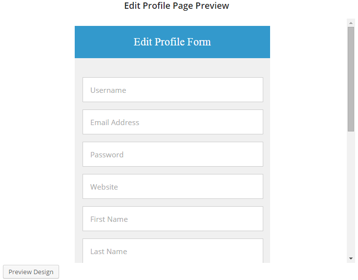
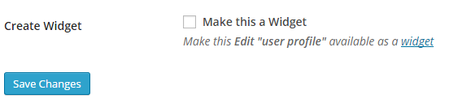

Using the form design below, let's build a custom edit-profile page where users can edit their profile information at the front-end of your website without having to do so in their WordPress dashboard.
See the Pen Memories Edit Profile Form by Agbonghama Collins (@collizo4sky) on CodePen.
Click the Front-end Edit Profile menu.
Click the Add New button at the top right corner of the page.
Enter a name for the edit-profile form in Template Name field.
The HTML and CSS code for the form will go into the Page Design and CSS Stylesheet textareas respectively.


Note: Error messages generated by edit profile forms powered by ProfilePress are wrapped in a div with class <div class="profilepress-edit-profile-status"> thus the CSS class in the stylesheet.
Click the Preview Design button to see how the form will look.

In order for ProfilePress to make this a form functional, the form components will have to be replaced by their ProfilePress shortcode equivalents
Below is the final revision of the form code.
<div id="sc-edprofile">
<h1>Edit Profile Form</h1>
<div class="sc-container">
[edit-profile-username title="Username" placeholder="Username"]
[edit-profile-email title="Email Address" placeholder="Email Address"]
[edit-profile-password title="Password" placeholder="Password"]
[edit-profile-website title="Website" placeholder="Website"]
[edit-profile-first-name title="First Name" placeholder="First Name"]
[edit-profile-last-name title="Last Name" placeholder="Last Name"]
[edit-profile-bio title="Bio" placeholder="Bio"]
[edit-profile-cpf key="gender" type="select" title="Gender" placeholder="Gender"]
[edit-profile-cpf key="facebook" type="text" title="Facebook Profile URL" placeholder="Facebook Profile URL"]
[edit-profile-cpf key="twitter" type="text" title="Twitter Profile URL" placeholder="Twitter Profile URL"]
[edit-profile-cpf key="google" type="text" title="Google+ Profile URL" placeholder="Google+ Profile URL"]
[edit-profile-cpf key="linkedin" type="text" title="LinkedIn Profile URL" placeholder="LinkedIn Profile URL"]
[edit-profile-submit value="Save Changes"]
</div>
</div>
The shortcode for the form fields are pretty easy to understand except for Gender, Facebook Profile URL, Twitter Profile URL, Google+ Profile URL and LinkedIn Profile URL which are custom created profile fields.
Note: The [edit-profile-cpf] shortcode is used for adding custom profile fields to edit profile forms.
Replace the HTML form code we earlier entered into the Page Design textarea with the revised code above.
Enter the notification text that will be displayed after a user successfully edited their profile into the Profile Edited Message field.

To make the password reset form available as a WordPress widget, tick the Make this a Widget check box.

Save and then click the Back to Catalog button.
Copy its shortcode, paste it to a WordPress page and publish.

Preview the page and you will see the registration form in action.
A live demo is available here.
Note: To gain access to the form, you'll have to log in to the site. Use demo as the username and password.